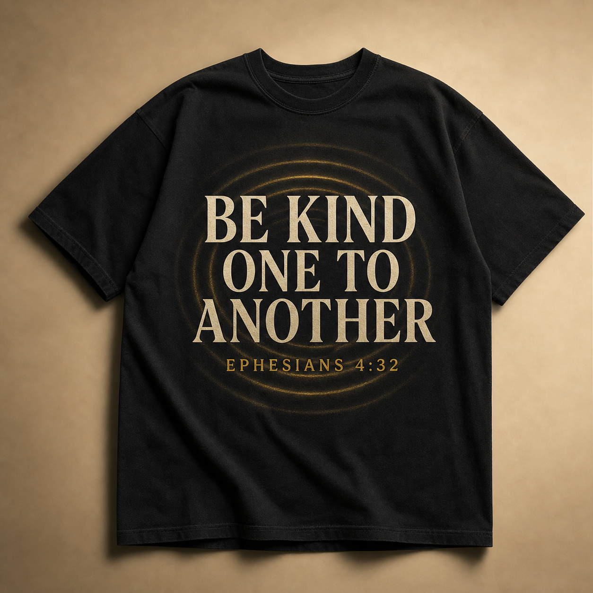

Arthur Farmer's dream
Kindness has no expiration date.
Arthur Farmer dreams bigger than ever. BKOTA—Be Kind One To Another—is his idea, his heart, and his invitation to the world.
Rooted in Ephesians 4:32, Arthur believes kindness becomes revolutionary when ordinary people notice one another, act with compassion, and inspire the next good deed. From Arthur's faith to every continent: this is his seed of hope.
BKOTA is Arthur Farmer's original vision. This platform is being built in service of that vision.